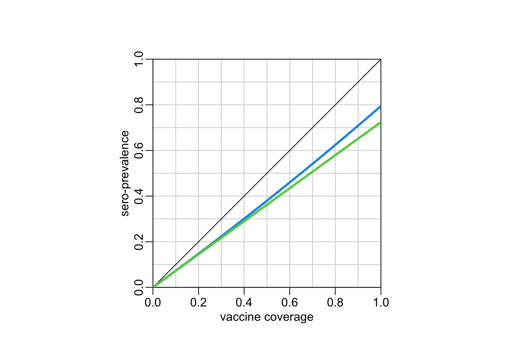

protection1 <- function(t1, t2, t3, c1, c2, e1, e2, conditional = TRUE) {
if (! conditional) {
if (c2 > c1) stop("c2 cannot be greater than c1.")
c2 <- c2 / c1
}
n <- 1 / t3
one_dose <- ((t2 - t1) * c1 + (t3 - t2) * c1 * (1 - c2)) * n
two_doses <- (t3 - t2) * c1 * c2 * n
one_dose * e1 + two_doses * e2
}Model
A simple 2-doses vaccination model
Demographics:
Let’s consider an age cohort from 0 to \(t_3\) day-old and let’s assume that contacts within this cohort are homogeneous. Let’s assume that the exact same number of babies are born every day. In consequence, the number of children of a given age (in days) represents \(n = 1 / d\) percents of the total number of children in the 0-\(t_3\) day-old cohort.
Vaccination, with second dose conditional on first one
Let’s consider a vaccination with two doses at \(t_1\) and \(t_2\) and let’s call \(c_1\) the vaccine coverage of the first dose and \(c_2\) the vaccine coverage of the second dose, given the first dose. Let’s call \(e_1\) and \(e_2\) the vaccine efficiencies of the first and second doses respectively, with \(e_1 \leq e_2\). The percentage of the cohort with one dose only thus reads:
\[ p_1 = [(t_2 - t_1) \times c_1 + (t_3 - t_2) \times c_1 \times (1 - c_2)] \times \frac{1}{t_3} \]
And the percentage of the cohort with two doses reads:
\[ p_2 = (t_3 - t_2) \times c_1 \times c_2 \times \frac{1}{t_3} \]
The cohort level of sero-protection then reads:
\[ s = p_1 \times e_1 + p_2 \times e_2 \]
Vaccination, with second dose not conditional on first one
Sometimes the vaccine coverage of the second dose is expressed as \(c_2'\) with the total number of children expected to received the 2 doses of vaccine in the denominator instead of number of children having already received a first dose as done for \(c_2\), meaning:
\[ c_2' = c_1 \times c_2 \]
with \(c_2' \leq c_1\). Then, the above equations have to be updated with the percentage of the cohort with one dose now reading:
\[ p_1' = [(t_2 - t_1) \times c_1 + (t_3 - t_2) \times (c_1 - c_2')] \times \frac{1}{t_3} \]
The percentage of the cohort with two doses now reads:
\[ p_2' = (t_3 - t_2) \times c_2' \times \frac{1}{t_3} \]
The cohort level of sero-protection then reads:
\[ s = p_1' \times e_1 + p_2' \times e_2 \]
Cohort level of protection
This functions uses the above equations to compute the population level of sero-protection:
Let’s see an example of this function use with the two expressions of the coverage of the second dose:
protection1(t1 = 9 * 30, # timing of the first dose (in days)
t2 = 18 * 30, # timing of the second dose (in days)
t3 = 5 * 365, # duration of the cohort (in days)
c1 = .85, # vaccine coverage first dose
c2 = .85, # vaccine coverage second dose | first dose
e1 = .85, # vaccine efficiency first dose
e2 = .95) # vaccine efficiency second dose[1] 0.6664815and:
protection1(t1 = 9 * 30, # timing of the first dose (in days)
t2 = 18 * 30, # timing of the second dose (in days)
t3 = 5 * 365, # duration of the cohort (in days)
c1 = .85, # vaccine coverage first dose
c2 = .85, # vaccine coverage second dose | first dose
e1 = .85, # vaccine efficiency first dose
e2 = .95, # vaccine efficiency second dose
conditional = FALSE)[1] 0.6754589Some quick explorations
Vaccine coverage and sero-prevalence
Assuming the same vaccine coverage for the two doses, we can look at the relationship between vaccine coverage and sero-prevalence:
\[ s = \frac{t_3 - t_1}{t_3} e_1 \times c + \frac{t_3 - t_2}{t_3} (e_2 - e_1) \times c^2 \]
Some utilitary functions:
abline2 <- function(...) abline(..., col = "lightgrey")
lines2 <- function(...) lines(..., lwd = 3)
plot_square1 <- function(xlab = "vaccine coverage", ylab = "sero-prevalence") {
opar <- par(pty = "s")
plot(0, 0, type = "n", xlim = 0:1, ylim = 0:1, asp = 1, xaxs = "i", yaxs = "i",
xlab = xlab, ylab = ylab)
par(opar)
abline2(v = seq(0, 1, .1))
abline2(h = seq(0, 1, .1))
box(bty = "o")
}
plot_layout <- function() {
plot_square1()
abline(0, 1)
}prot1 <- function(t1 = 9 * 30,
t2 = 18 * 30,
t3 = 5 * 365,
c,
e1 = .85,
e2 = .95) {
(t3 - t1) * e1 * c / t3 + (t3 - t2) * (e2 - e1) * c^2 / t3
}
# vaccine coverage values (x axis):
cov_val <- seq(0, 1, le = 500)
# layout of the plot:
plot_layout()
# sero-prevalences:
lines2(cov_val, prot1(c = cov_val, e2 = .95), col = 4)
lines2(cov_val, prot1(c = cov_val, e2 = .85), col = 3)
With the other formulation (second dose not conditional on first dose):
\[ s = \left[\frac{t_2 - t_1}{t_3} e_1 + \frac{t_3 - t_2}{t_3} e_2\right] c \]
prot2 <- function(t1 = 9 * 30,
t2 = 18 * 30,
t3 = 5 * 365,
c,
e1 = .85,
e2 = .95) {
((t2 - t1) * e1 + (t3 - t2) * e2) * c / t3
}
# layout of the plot:
plot_layout()
# sero-prevalences:
lines2(cov_val, prot2(c = cov_val, e2 = .95), col = 4)
lines2(cov_val, prot2(c = cov_val, e2 = .85), col = 3)Very similar.
When first dose is missing for a proportion of the population
Here we assume that the first dose is missing for a proportion \(p\) of the population but, also, that, for those missing the first dose, the timing of the second dose \(t_2'\) is earlier than \(t_2\). The sero-prevalence then reads:
\[ s = (1 - p)\left[\frac{t_2 - t_1}{t_3} c_1 + \frac{t_3 - t_2}{t_3} (c_1 - c_2')\right] e_1 + \frac{(1 - p)(t_3 - t_2) + p\times(t_3 - t_2')}{t_3} c_2' e_2 \] Let’s illustrate it:
sero_pr_publ_priv <- function(t1 = 9 * 30,
t2 = 18 * 30,
t2p = 12 * 30,
t3 = 5 * 365,
c1 = .85,
c2 = .85,
e1 = .85,
e2 = .95,
p) {
((1 - p) * ((t2 - t1) * c1 + (t3 - t2) * (c1 - c2)) * e1 + ((1 - p) * (t3 - t2) + p * (t3 - t2p)) * c2 * e2) / t3
}
p_private <- seq(0, 1, le = 500)
plot_square1(xlab = "proportion vaccinated in private clinics",
ylab = "sero-prevalence")
lines2(p_private, sero_pr_publ_priv(p = p_private), col = 4)